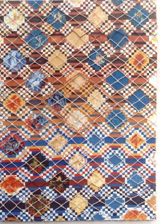
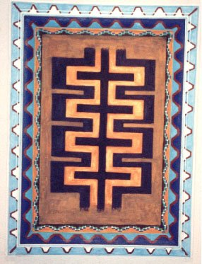

Afwo Hó ;Lomo de Sury (al centro), de fondo;Oreja de mulita; interpretación de la forma en la composición dada por el nudo del tejido en chaguar.

Ajuchafus patas de carancho: nombre del tejido en las yikas..técnica mixta piolas de chaguar sobre tela, acrílico, tintas naturales.

Este es un Símbolo Tejido con Hilos Hebras de Chaguar(Yute). Denominado Así su Forma geométrica por Las Ancestrales Tejedoras Wichí: "Afwo Hó"="Lomo de Suri" El Lomo de la carne del Suri es uno de los Alimento con mucha proteína,para los niños y las mujeres...(Símbolizado uno de los tejido de las Bolsas="Yika" en una de Mis Obras Artística ).